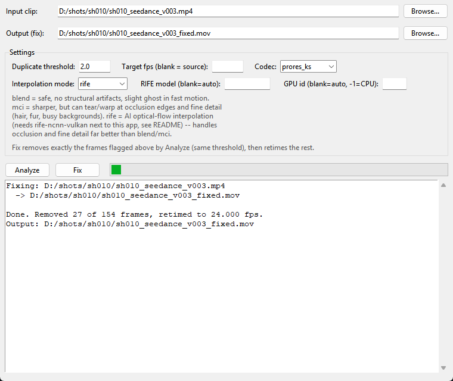

Detects and fixes the duplicate / held-frame stutter baked into Seedance 2.0 clips, and rebuilds the missing motion with RIFE AI interpolation.
Single .exe (~188 MB) with ffmpeg and the RIFE model bundled inside. Nothing else to install.
Seedance 2.0 often repeats a frame (commonly every 3rd or 4th) inside the render. You see it as a hitch in fast motion and a jump when you scrub. This tool finds those exact frames and replaces them with real in-betweens, keeping the original frame count and timing.
Red: a held frame that repeats the previous pose. Green: an interpolated frame generated in its place.
Two buttons: Analyze, then Fix. Fix removes exactly the frames that Analyze flagged, with the same threshold.
Each frame is compared with the one before it. A frame counts as held only if it is nearly identical and the next frame snaps back to real motion, so real slow motion or a locked-off tail is not flagged.
The report tells you how many frames are held and the pattern (e.g. "every 4th frame"). Those frames, and only those, are dropped with ffmpeg's select filter.
Each gap gets one new frame at its exact time position. The output keeps the source fps and frame count, as ProRes 422 HQ for comp or H.264/H.265 for review.
Pick a clip, click Analyze to see the report, then click Fix.

Pick the one that suits the shot.
| Mode | What it does | When to use |
|---|---|---|
blend | ffmpeg cross-blend of the two real frames on either side | Safest. No structural artifacts, slight ghosting in fast motion |
mci | ffmpeg motion-compensated interpolation | Sharper, but can tear at hair and occlusion edges |
rife best | AI optical flow (RIFE v4.6, GPU via Vulkan) | VFX work. Handles fine detail and occlusion best |
The same engine runs from Python, for batch jobs and pipelines.
# install dependencies pip install opencv-python numpy pillow rife-ncnn-vulkan-python-tntwise # analyze a clip python cli.py report --input clip.mp4 # fix it with AI interpolation (ProRes 422 HQ output) python cli.py fix --input clip.mp4 --output clip_fixed.mov --interp-mode rife
Full parameter list and build instructions are in the README.